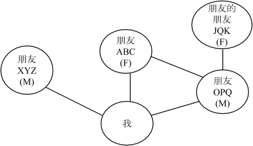

在这项任务中，我们希望您绘制一幅社会关系图。这幅图主要是描绘您的朋友与您之间的关系，以及他们之间的相互关系。首先，请在下一页画一个圆并填写“我”，代表您自己。然后在您自己的周围画一些圆，填写您的朋友们的姓名首字母，并在您自己和他们之间连线。如果您画出的任何两位朋友互相之间也是朋友，请在他们之间也画出连线。
下图是一个假想的社会关系图的例子，画出了4个朋友之间的关系。在这个例子中，你和朋友ABC、OPQ、XYZ之间存在相互关系；朋友ABC和朋友OPQ之间也互相是朋友，但朋友OPQ还另有一个与你并无直接关联的朋友；朋友XYZ是你的朋友，但并不是你其他朋友的朋友（或不认识你的其他朋友）。

您有5分钟的时间来完成这部分问卷。您可以自行决定您所画的社会关系图的复杂程度。请用姓名的拼音首字母来代表您的朋友，不要使用他们的全名。此外，请在姓名首字母后面写出“M”表示是男性，“F”表示女性。
完成全部人物关系图后，请点击提交，进入新的页面
Submitting...
Submission successful!
请点击下一页继续输入您的基本信息和支付方式，以便我们向您支付报酬
如果您尚未完成社会关系图，请点击返回继续修改，我们将以您的最后一次提交为准。